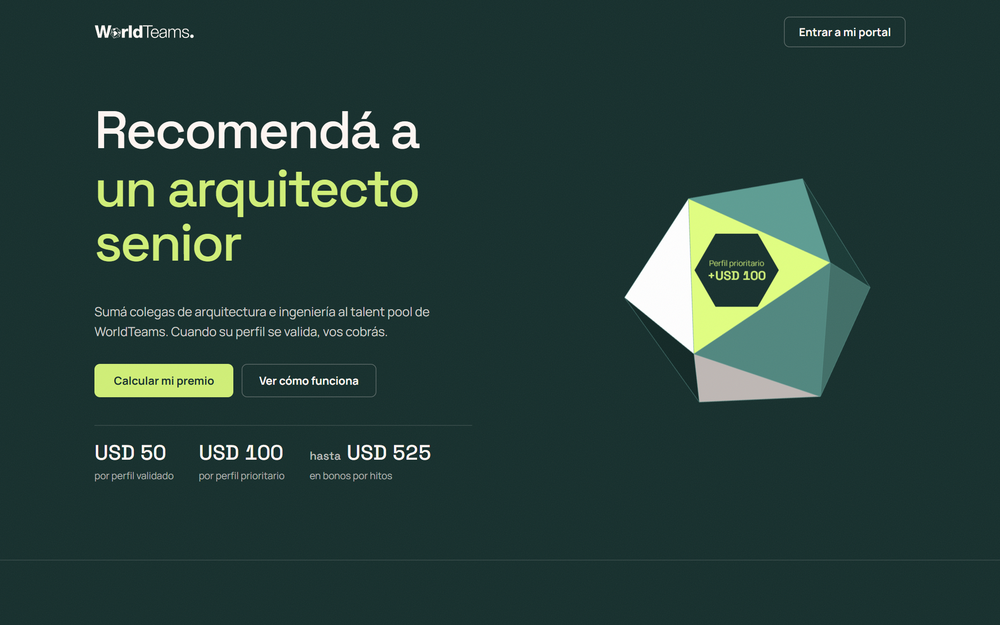
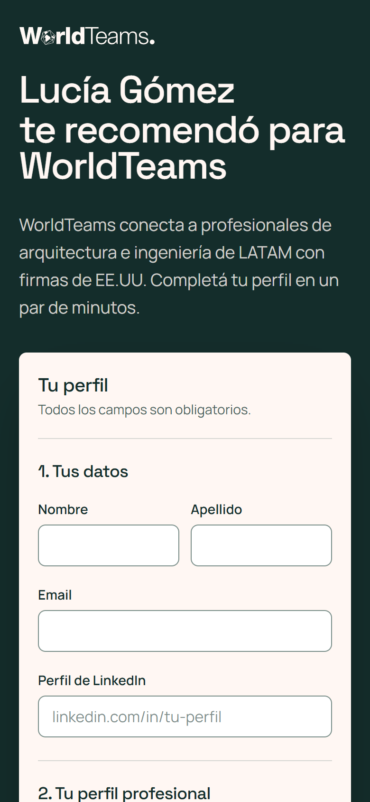
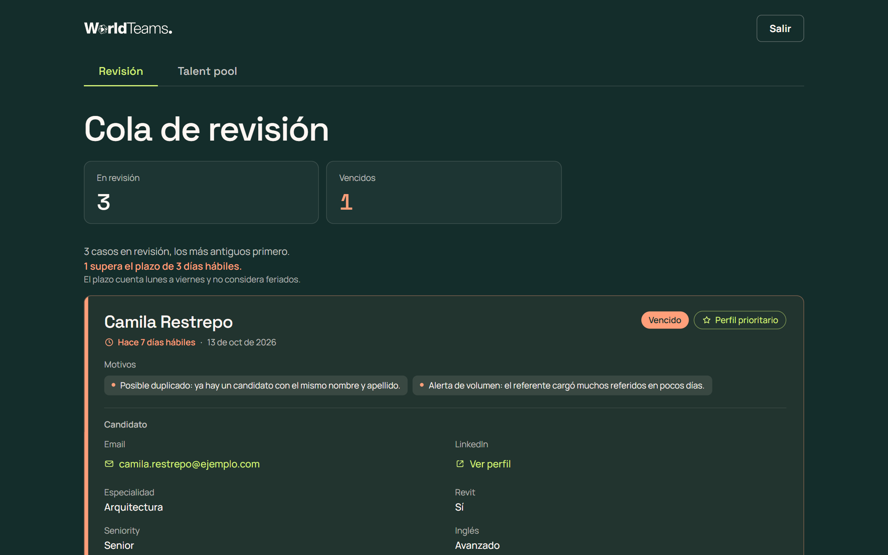
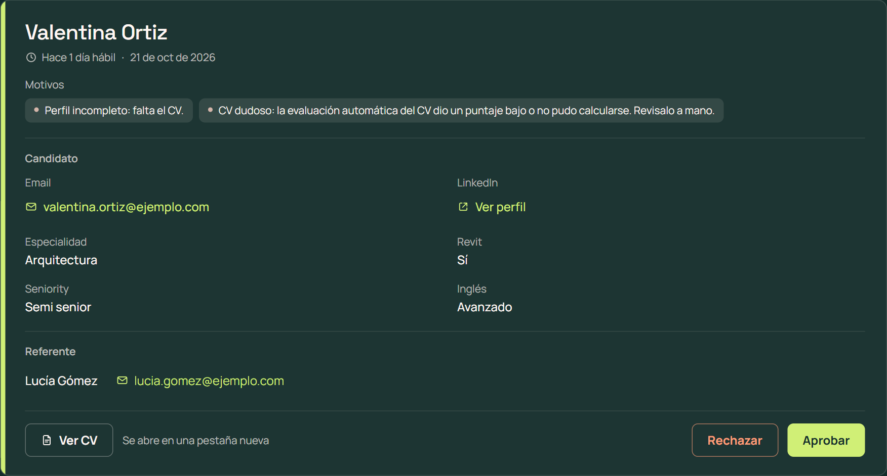
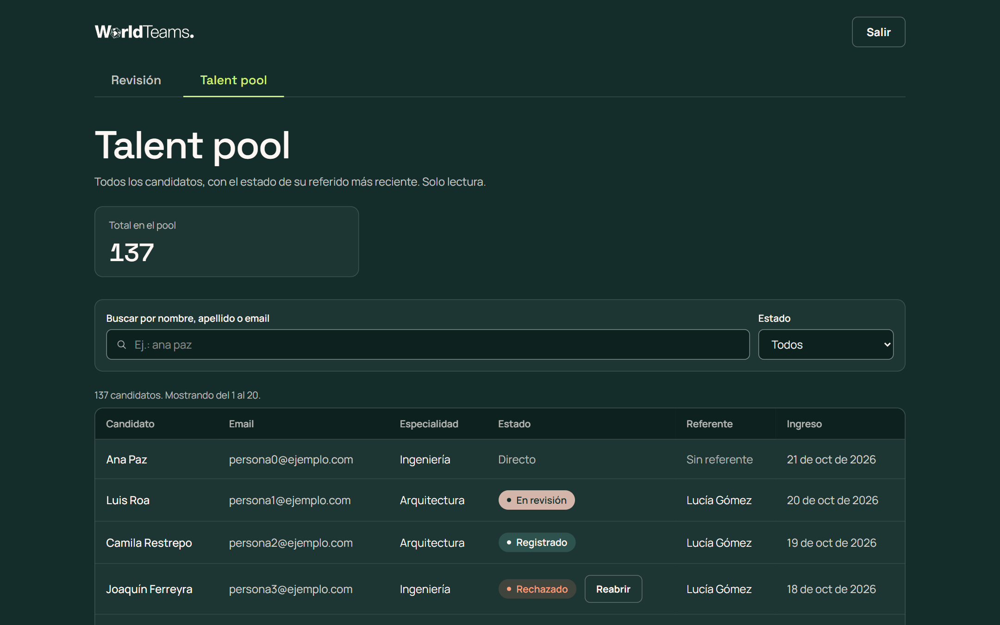
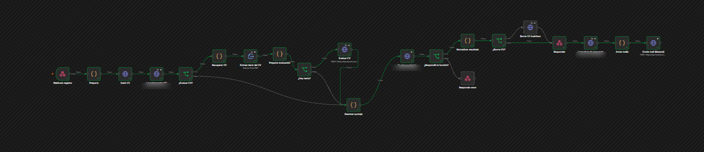
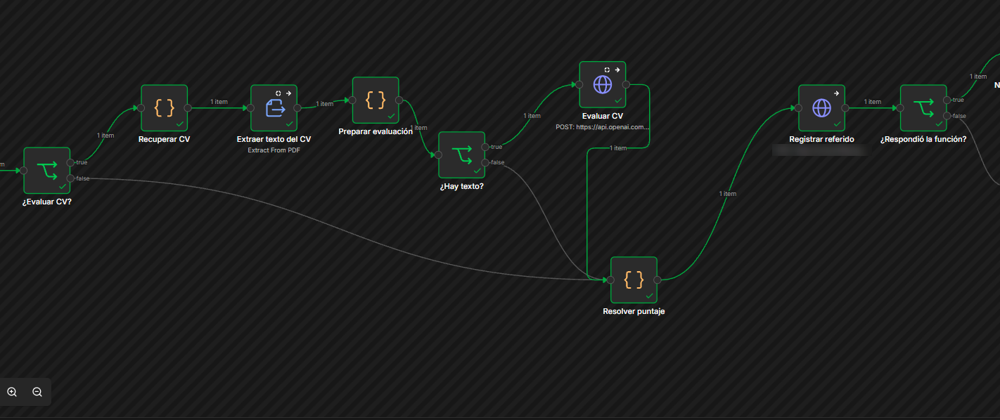
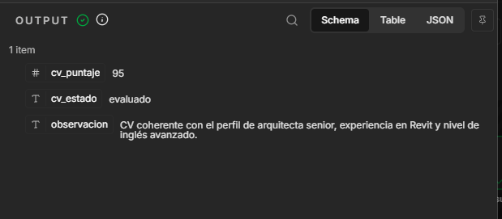

Diseño del sistema para pasar de 500 a 1.000 ingresos por mes al talent pool, con la landing, la base y el primer flujo de automatización funcionando.
Llevar los ingresos al talent pool de 500 a 1.000 por mes. La meta se mide en personas que se registran y entran a la base, no en colocaciones. El perfil más buscado: arquitectos senior con Revit y buen inglés.
Solo profesionales colocados por WorldTeams en una firma cliente y sin sanción: tienen sueldo donde cobrar, su criterio ya fue validado y no están en un proceso de selección (sin conflicto de intereses). Entran por una lista que carga WorldTeams; no hay registro público.
Cada referente tiene un link personal, /r/{nombre}-{8 caracteres} (ej.: /r/lucia-k7q2m9xd), con un sufijo aleatorio no adivinable. La persona recomendada carga sus propios datos y su CV en PDF, y acepta que quien la recomendó vea su nombre y el estado de su registro. El formulario tiene reCAPTCHA. El referente sigue sus referidos y premios en un portal con magic link.
En efectivo: en una consulta informal a 6 personas, 5 lo eligieron sobre créditos.
| Concepto | USD |
|---|---|
| Referido validado | 50 |
| Perfil prioritario: arquitectura + Revit + senior + inglés avanzado o nativo (base + extra de 50) | 100 |
| Bono por hito, acumulativo en el año calendario: 3 · 6 · 10 validados | +75 · +150 · +300 |
El premio nace cuando el perfil se valida, no cuando la persona es colocada: la meta es el ingreso al pool. Es un pago único que se liquida una vez por mes con el sueldo: lo validado hasta el día 25 (hora de Buenos Aires) entra en ese ciclo. Si el referente deja de estar colocado, cobra igual lo ganado, por transferencia.
Automática por reglas: si el perfil cumple todo, queda validado sin intervención humana. Va a revisión solo ante un posible duplicado (mismo nombre y apellido), una alerta de volumen (más de 5 referidos del mismo referente en 7 días; sin tope), un perfil sin CV o un CV dudoso: la evaluación automática del CV da menos que el umbral configurable (hoy 60 de 100) o no se pudo calcular. Solo manda a revisión: nunca valida ni rechaza. Reclutamiento resuelve en 3 días hábiles; a la persona se le promete respuesta en 5.
Con 750 referentes (supuesto a confirmar), 500 ingresos por mes exigen 0,67 validados por referente con el 100 % participando. El cuello de botella es cuántos referentes participan, no el costo.
WorldTeams no definió presupuesto: los montos son una propuesta y se ajustan desde la configuración. El programa se paga si al menos X % de los referidos se coloca (X = costo por referido ÷ ingreso por colocación, dato a pedir).
| Escenario | Activos | Por activo | Ingresos | Costo |
|---|---|---|---|---|
| Conservador · 10 % | 75 | 0,5 | ~38 | ~USD 2.400 |
| Base · 25 % | ~190 | 0,5 | ~95 | ~USD 6.200 |
| Optimista · 50 % | 375 | 1 | ~375 | ~USD 24.400 |
| Meta · 100 % | 750 | 0,67 | 500 | ~USD 32.500 |
Por mes. "Por activo": validados por referente activo. USD 65 promedio por validado (30 % prioritarios, sin hitos). La participación es un supuesto.
supabase/schema.sql y evaluacion_cv.sql
Siete tablas de negocio, dos internas y tres vistas. Las reglas que no se pueden romper (unicidad, estados, pagos y permisos) las impone la base.
supabase/schema.sql y supabase/consulta_referente.sql. PK: clave primaria · FK: clave foránea · UQ: única · GEN: columna generada por la base. N y 1 marcan cada extremo de la relación. En línea punteada, tablas internas o de Supabase Auth.Además de lo listado, cada tabla tiene id (uuid, PK) y creado_en, salvo que se indique otra cosa.
Profesionales colocados que pueden referir. Los carga WorldTeams.
| Campo | Tipo y restricción | Para qué |
|---|---|---|
| nombre, apellido | text · no vacíos | Se muestran al candidato en el link. |
| text · único, normalizado | Acceso al portal y detección de autorreferido. | |
| linkedin_url | text · forma canónica | Detección de autorreferido. |
| codigo_referido | text · único, formato validado | El link /r/{código}. Lo genera un trigger y no se puede cambiar. |
| colocado | boolean | Solo un colocado abre referidos. Si deja de estarlo, cobra por transferencia. |
| sancionado_en | timestamptz · nulo = sin sanción | Un sancionado no abre referidos ni genera pagos nuevos. |
| auth_user_id | uuid · único, FK a auth.users | Vínculo con la sesión del portal. |
Cada persona en la base, haya llegado por un referido o directo.
| Campo | Tipo y restricción | Para qué |
|---|---|---|
| nombre, apellido | text · no vacíos | Lo único que ve el referente, junto con el estado. |
| text · único, normalizado | Evita duplicados en el pool. | |
| linkedin_url | text · único, forma canónica | Segundo control de duplicados. |
| especialidad | enum · arquitectura | ingenieria | Perfil y prioridad. |
| usa_revit | boolean | Perfil y prioridad. |
| seniority | enum · junior | semi_senior | senior | Perfil y prioridad. |
| nivel_ingles | enum · basico … nativo | Perfil y prioridad. |
| cv_url | text · ruta en el bucket privado cvs | CV en PDF, hasta 5 MB. Solo lo lee reclutamiento. |
| acepto_visibilidad | boolean · obligatorio si llegó referido | Consentimiento para que el referente vea su nombre y estado. |
| origen | text · referido | directo | Distingue a quien ya estaba en el pool. |
| es_prioritario | boolean · GENERATED | Arquitectura + Revit + senior + inglés avanzado o nativo. Lo calcula la base. |
Une a un candidato con el referente cuyo link usó. Lleva el estado del caso.
| Campo | Tipo y restricción | Para qué |
|---|---|---|
| referente_id | uuid · FK, no se puede cambiar | A quién se le atribuye el premio. |
| candidato_id | uuid · FK, no se puede cambiar | Un solo referido vigente por candidato (índice único parcial, sin contar los descartados). |
| estado | enum · transiciones controladas por trigger | registrado, validado, en_revision, rechazado o descartado. |
| motivos_revision | text[] | Por qué entró a revisión o se descartó: posible_duplicado, alerta_volumen, perfil_incompleto o cv_dudoso (evaluación automática del CV; el puntaje no se guarda). |
| validado_en | timestamptz · solo si está validado | Define el ciclo de pago y el año de los hitos. |
El libro de pagos: cada monto es una fila, con el valor copiado de la configuración al crearse.
| Campo | Tipo y restricción | Para qué |
|---|---|---|
| referente_id | uuid · FK | A quién se le paga. |
| referido_id | uuid · FK, nulo en los bonos | Qué referido lo generó. |
| concepto | enum · base | extra_prioritario | bono_hito | Cada concepto es una fila que se audita por separado. |
| hito_umbral, periodo_hito | integer · solo en bono_hito | Qué hito (3, 6 o 10) y de qué año. |
| monto_usd | numeric · mayor que 0, inmutable | El monto vigente al validar; cambiar la configuración después no lo toca. |
| estado | enum · pendiente | pagado | cancelado_sancion | Un movimiento cerrado ya no se modifica. |
| ciclo_pago | text · AAAA-MM | Mes de liquidación según el día de corte. |
| metodo_pago | enum · liquidacion_sueldo | transferencia | Transferencia si el referente ya no está colocado. |
| preferencia_cobro | text · por defecto 'efectivo' | Previsto para el canje de la segunda etapa. |
| pagado_en | timestamptz · solo si está pagado | Fecha de pago. |
| Campo | Tipo y restricción | Para qué |
|---|---|---|
| id | bigint · PK identity | Orden de los cambios. |
| referido_id | uuid · FK | De qué caso. |
| estado_anterior, estado_nuevo | enum · el anterior es nulo en el alta | Cada alta y cada cambio de estado. |
| actor_tipo, actor_id | enum sistema | reclutamiento · uuid | Quién decidió; el id es el del revisor. |
| motivo | text | Por qué. |
| creado_en | timestamptz | Cuándo. |
| Objeto | Forma | Para qué |
|---|---|---|
| configuracion | clave text PK · valor jsonb · descripcion · actualizado_en/por | 12 claves: montos, hitos, día de corte, zona horaria, plazos, alerta de volumen, límite por IP y la evaluación del CV (evaluacion_cv_activa, un interruptor que viene apagado, y evaluacion_cv_umbral, de 0 a 100, por defecto 60). Un trigger valida cada valor al guardarlo y registra quién lo cambió. |
| equipo_reclutamiento | email único · nombre · activo | Quién entra al panel. Sin políticas de lectura: se consulta con es_reclutamiento(). |
| secretos_internos | tabla interna | El secreto de aplicación que exigen las dos funciones que llama la landing. Sin permisos para anónimo ni autenticado. |
| intentos_consulta_codigo | tabla interna · PK (ip, código) | Códigos inexistentes que probó cada IP, para el tope de 10 cada 600 s. |
| v_mis_referidos | vista del portal | Nombre y estado de los referidos propios; rechazado y descartado se ven como "no avanzó". |
| v_progreso_referente | vista del portal | Validados del año, próximo hito y cuántos faltan. |
| v_cierre_ciclo | vista de n8n | Movimientos pendientes por ciclo, referente y método de pago, para el cierre mensual. |
estado_referido (registrado · validado · en_revision · rechazado · descartado) · concepto_pago (base · extra_prioritario · bono_hito) · estado_pago (pendiente · pagado · cancelado_sancion) · metodo_pago (liquidacion_sueldo · transferencia) · actor (sistema · reclutamiento) · y los del perfil: especialidad (arquitectura · ingenieria), seniority (junior · semi_senior · senior) y nivel_ingles (basico · intermedio · avanzado · nativo). Todos llevan el prefijo tipo_ en la base.
| Sin duplicados | UNIQUE en email y LinkedIn de candidatos, normalizados por trigger antes de guardar. |
| Un referido vigente | Índice único parcial referidos (candidato_id) where estado <> 'descartado': el premio va a un solo referente. |
| Prioridad calculada | es_prioritario es GENERATED ALWAYS … STORED: nadie la escribe. |
| Formato del código | CHECK ^[a-z0-9]+(-[a-z0-9]+)*-[a-z0-9]{8}$; único e inmutable. |
| Un pago por concepto | UNIQUE (referido_id, concepto): repetir la validación no duplica el pago. |
| Un hito por año | UNIQUE (referente_id, hito_umbral, periodo_hito). |
| Normalización | Email en minúsculas y sin espacios; LinkedIn a https://www.linkedin.com/in/usuario (o error si no es un perfil). |
| Código del referente | Se genera al crear (nombre + 8 caracteres base36 del generador criptográfico de Postgres) y no se puede cambiar. |
| Reglas del referido | Nace registrado o descartado; solo lo abre un referente colocado y sin sanción; bloquea el autorreferido; transiciones permitidas: de registrado a validado o en_revision, de en_revision a validado o rechazado, y de rechazado a en_revision (reabrir). |
| Historial | Cada alta y cada cambio de estado escribe una fila. Otro trigger impide modificarla o borrarla, y a la service role se le quitó el permiso. |
| Pagos al validar | Al pasar a validado se ejecuta crear_movimientos_validacion. |
| Movimientos | Monto y concepto inmutables; un movimiento pagado o cancelado no se toca; un sancionado no genera nuevos. |
| Configuración | Valida tipo y rango de cada clave al guardarla (por ejemplo, el día de corte va de 1 a 28, la zona horaria tiene que existir y el umbral del CV es un entero de 0 a 100). |
| Función | Qué hace | Quién la ejecuta |
|---|---|---|
| registrar_referido | En una transacción: normaliza, bloquea por email y LinkedIn, valida el código, detecta autorreferido y candidato existente, evalúa las reglas de revisión, inserta y valida o manda a revisión. Recibe un parámetro opcional, p_cv_puntaje (entero de 0 a 100; fuera de rango cuenta como nulo): con la evaluación del CV encendida, un puntaje nulo o menor que el umbral suma el motivo cv_dudoso; apagada, lo ignora. Devuelve un JSON con resultado, estado, monto, bono, ciclo, próximo hito y cv_puntaje (informativo: no hay columna, el puntaje no se guarda). | service_role (n8n) |
| resolver_referido | Aprobar, rechazar o reabrir un caso. Verifica es_reclutamiento() adentro, bloquea la fila y deja al revisor en el historial. | authenticated (panel) |
| cambiar_estado_referido | Cambia el estado y deja actor y motivo en el historial. | service_role |
| crear_movimientos_validacion | Base, extra prioritario y bonos de hito con los montos de configuracion; ciclo según el día de corte y la zona horaria. Idempotente. | trigger |
| sancionar_referente | Marca la sanción y cancela los movimientos pendientes; no toca lo pagado ni los estados. | service_role |
| consultar_referente_por_codigo | Valida el link desde la landing: responde ok, no_existe o bloqueada (tope por IP). Sin el secreto de aplicación, no_autorizado. | anon, con secreto |
| email_habilitado | ¿Este email puede entrar? Responde referente, reclutamiento o ninguno. Sin el secreto, no_autorizado. | anon, con secreto |
| Rol | Puede |
|---|---|
| Anónimo (landing) | Leer configuracion (montos y plazos públicos) y llamar a las dos funciones con secreto. No lee ninguna otra tabla. |
| Referente | Su fila de referentes, sus movimientos_pago y las vistas v_mis_referidos y v_progreso_referente, filtradas por referente_actual_id(). No lee candidatos ni referidos en crudo. |
| Reclutamiento | Leer referentes, candidatos, referidos, historial y movimientos; leer los CV del bucket; ejecutar resolver_referido. |
| service_role (n8n) | El único con escritura directa sobre las tablas; ejecuta registrar_referido, cambiar_estado_referido y sancionar_referente. No puede modificar ni borrar el historial ni ejecutar resolver_referido. |
es_prioritario lo calcula la base: la regla está en un solo lugar y la app, el flujo y la base no pueden discrepar.resolver_referido corre con la sesión de la persona y exige es_reclutamiento(). El permiso lo controla la base, no el botón.Una sola app: la página del programa para el referente, el formulario para la persona recomendada, y el portal y el panel, cada uno con su rol.


| Pantalla | Qué hace |
|---|---|
| / | El programa para el referente: cómo funciona, premios e hitos, una calculadora de premios por año, preguntas frecuentes y el acceso al portal. Los montos salen de la configuración, no están escritos a mano. |
| /r/{código} | El formulario para la persona recomendada: nombra a quien la recomendó, pide datos, perfil y CV en PDF, el aviso de visibilidad y reCAPTCHA v3. Al enviar muestra la confirmación con los próximos pasos o, si ya estaba en la base, un mensaje neutro. Un link inexistente o una IP bloqueada ven una pantalla propia. |
| /ingresar | Login por magic link, solo para emails habilitados. Siempre responde lo mismo, esté o no habilitado el email. |
| /portal | El referente ve su link para copiar, sus referidos con nombre y estado, sus premios pendientes y pagados y la barra al próximo hito. Solo lectura. |
| /panel | Reclutamiento: la cola de casos en revisión con sus motivos y el plazo vencido, el talent pool con búsqueda y filtro, el CV con un link firmado por 60 segundos, y Aprobar, Rechazar o Reabrir. |



/dev/panel y /dev/panel/pool, con datos ficticios./ingresar (5 por IP y 3 por email cada 10 minutos) viven en la memoria de cada instancia: con varias, se multiplican. El tope de códigos del link vive en la base.Cuando la persona recomendada envía el formulario, la app verifica reCAPTCHA y reenvía los datos a un webhook de n8n. El flujo sube el CV, evalúa su texto con un modelo de IA (si el interruptor está encendido), registra todo en la base con una sola llamada, responde a la app y manda los mails. El JSON importable (flujo-1-registro.json) va adjunto aparte.



| 1 · Webhook registro | Recibe el POST multipart con los datos y el CV. Exige el encabezado secreto (credencial Header Auth) y responde desde un nodo posterior. |
| 2 · Preparar | Limpia espacios, pasa usa_revit de "si/no" a booleano y nombra el archivo con un UUID. No calcula es_prioritario. Si falta el CV, corta. |
| 3 · Subir CV | Sube el PDF a cvs/{uuid}.pdf, un bucket privado. Si falla, el flujo se corta sin llamar a la base y la app responde un error. |
| 4 · Leer interruptor CV | Lee evaluacion_cv_activa de configuracion (tiempo máximo 3 s). Si falla, se toma como apagado. |
| 5 · ¿Evaluar CV? | Apagado: salta directo al nodo 11 y no se llama a OpenAI. Encendido: sigue. |
| 6 · Recuperar CV | Toma el PDF que ya está en memoria desde Preparar; no lo descarga de nuevo. |
| 7 · Extraer texto del CV | Extrae el texto del PDF con el nodo Extract From File. |
| 8 · Preparar evaluación | Quita emails, teléfonos y URLs con expresiones regulares, recorta a 12.000 caracteres y arma el prompt, con el CV entre marcadores como dato. Descarta frases evidentes de inyección. Con menos de 200 caracteres (PDF escaneado o casi vacío) no hay texto que evaluar. |
| 9 · ¿Hay texto? | Sin texto o con inyección evidente, salta al nodo 11 sin llamar al modelo. |
| 10 · Evaluar CV | HTTP Request a chat completions de OpenAI (gpt-4o-mini, temperatura 0, respuesta en JSON). Tiempo máximo 6 s, sin reintentos; si falla, el flujo sigue. |
| 11 · Resolver puntaje | Único origen de cv_puntaje: un entero de 0 a 100 o nulo. Cualquier falla, respuesta cortada o ilegible da nulo. |
| 12 · Registrar referido | Una llamada RPC a registrar_referido, con p_cv_puntaje. Toda la lógica del registro, incluida la decisión sobre el puntaje, ocurre ahí, en una transacción. |
| 13 · ¿Respondió la función? | Si el resultado es uno de los conocidos, sigue. Si hubo un error o se agotó el tiempo, va al 15. |
| 14 · Normalizar resultado | Traduce autorreferido a ya_registrado, porque la app conoce tres resultados y una pantalla propia le avisaría a quien intenta hacer trampa. Marca si hay que borrar el CV: se borra siempre que no sea un registro nuevo. |
| 15 · Responder error | 502 con {"resultado":"error"}. El CV no se borra, porque no se sabe si la base confirmó. |
| 16 · ¿Borrar CV? | Bifurca según la marca del nodo 14. |
| 17 · Borrar CV huérfano | Borra el archivo que sobra. Si el borrado falla, sigue igual. |
| 18 · Responder | 200 con el resultado para la app. Se responde antes de mandar mails: un mail caído no rompe el registro. |
| 19 · Leer plazo de respuesta | Lee de configuracion los días hábiles que se le prometen al candidato. Si falla, el mail dice "en los próximos días hábiles". |
| 20 · Armar mails | De 0 a 2 mails, con todo lo que muestran sacado del JSON de la función: confirmación al candidato nuevo; "referido validado" al referente, con monto, bono y avance; "no cuenta" al referente si la persona ya estaba en el pool. |
| 21 · Enviar mail (Resend) | Uno por uno, a un mail por cada 600 ms. Si un envío falla, sigue. |
Verificado el 22/10, con la base real y a mano (sin script):
n8n/probar-flujo-1.mjs (E1 a E5) están escritos y no se ejecutaron. El "12 de 12" anterior era del flujo de 13 nodos: no cubre el flujo actual de 21.POST · multipart/form-data · encabezado x-webhook-secret. Campos: codigo_referente, nombre, apellido, email (en minúsculas), linkedin_url (normalizada), especialidad (arquitectura | ingenieria), usa_revit (si | no), seniority, nivel_ingles, acepto_visibilidad (true) y cv (PDF de hasta 5 MB, extensión y firma ya verificadas por la app). La URL y el secreto solo los tiene el servidor de la app.
200 con {"resultado": …}:
registrado: candidato nuevo (validado o en revisión) o reintento del mismo referente.ya_registrado: ya estaba en el pool, o es un autorreferido.codigo_invalido: código inexistente, o referente no colocado o sancionado.Cualquier otra respuesta hace que la app devuelva 502. La evaluación del CV no cambia este contrato: la app no ve el puntaje.
v_cierre_ciclo por mail a quien liquida sueldos, con un botón "Confirmar pago" que marca los movimientos como pagados.DECISIONS.md
WorldTeams respondió cuatro cosas: la meta se mide en ingresos al pool, el perfil más buscado es el arquitecto senior con Revit y buen inglés, no hay prioridad por país y no hay presupuesto definido. Lo demás quedó como supuesto, para confirmar en la charla:
candidatos representa el pool; en producción se sincronizaría con su sistema de seguimiento de candidatos.| Solo colocados refieren | Tienen sueldo donde cobrar, su criterio ya fue validado y no tienen conflicto de intereses. Abrir el programa a otros queda para cuando la base de referentes no alcance. |
| Se paga al validar | La meta son ingresos al pool. Pagar al colocar llega tarde; pagar al registrarse invita a registros falsos. |
| Efectivo, fijo y con hitos | USD 50, o 100 si el perfil es prioritario, y bonos de +75, +150 y +300 por año. Descarté un porcentaje del sueldo: no tiene techo, es injusto entre referentes y usa un dato sensible. |
| Revisión solo de los dudosos | Revisar cada caso no escala a 1.000 por mes: hay un solo punto de aprobación humana. |
| Link no adivinable | Sufijo de 8 caracteres base36 (368, unos 2,8 billones de combinaciones). La segunda capa vive en la base: consultar_referente_por_codigo cuenta los códigos inexistentes por IP y bloquea al llegar a 10 en 600 segundos (limite_consulta_codigo), y solo responde con el secreto que tiene el servidor de la app. |
| Garantías en la base | Registro en una transacción, pagos por trigger, historial de solo inserción y RLS en todas las tablas. n8n orquesta y la service role solo vive en n8n. |
| Evaluación del CV con IA (decisión 70) | Idea mía: sin esto, el pago automático validaba perfiles sin comprobar que fueran reales. n8n extrae el texto del PDF, le quita emails, teléfonos y URLs, y le pide un puntaje de 0 a 100 a un modelo (llamada simple, no un agente). La base decide: con el interruptor encendido, un puntaje nulo o menor que el umbral (60, en configuracion) suma el motivo cv_dudoso y manda el caso a revisión. Nunca valida, rechaza ni cambia montos, y el puntaje no se guarda. Se envía solo el texto del CV y los cuatro campos del perfil declarado; no se envía nombre, apellido, email, LinkedIn del formulario ni el código del referente. Tope de 10 s en total (3 s el interruptor, 6 s el modelo), sin reintentos; si algo falla, el puntaje es nulo. Descarté un agente con herramientas y que el puntaje valide o rechace. |
| Panel sin n8n | Aprobar, rechazar y reabrir llaman a resolver_referido con la sesión de la persona. Pasar por un webhook sumaba un salto y una credencial sin aportar lógica. Es una excepción documentada a mi diseño inicial. |
| Nada hardcodeado | Montos, hitos, día de corte, zona horaria, plazos y umbrales están en configuracion, que valida cada valor al guardarlo. |
| Mails | Resend desde n8n, con remitente referidos@mail.signa.net.ar (dominio verificado solo para este ejercicio). En producción, WorldTeams verifica su dominio y se cambia en dos lugares: el nodo Enviar mail (Resend) de n8n y el remitente del SMTP de Supabase. |
Los de la app (login y panel) están en la sección 3. Los del sistema:
on conflict do nothing, así que revalidar no corregiría nada. Los movimientos pagados o cancelados están cerrados por trigger. El estado de pago no tiene un valor de "cancelado por revisión". Un pago hecho no tiene compensación, porque el monto siempre es mayor que 0. Los bonos de hito no se vinculan con el referido que los disparó. Si alguien se aprobó por error, hoy se resuelve fuera del sistema.pg_trgm.referente_actual_id(), y las pruebas demuestran que un referente no ve lo de otro.preferencia_cobro).supabase/tests.sql en la base real, 269 de 269 (12 claves de configuración). Incluye 35 pruebas de la evaluación del CV.app/ (Vitest), 194 de 194 en 17 archivos, corridas el 22/10.n8n/probar-flujo-1.mjs (E1 a E5). El "12 de 12" de ese script era del flujo de 13 nodos: no cubre el flujo actual de 21.Usé Claude como interlocutor de diseño (una pregunta por vez, con opciones y una recomendación). Contrasté sus propuestas con las respuestas de WorldTeams, con su web y con una consulta informal a 6 personas. Después usé Claude Code para construir, con el repo como contexto y el registro de decisiones como fuente de verdad. Cada corrección quedó anotada en AI-LOG.md; estas son las que más cambiaron el resultado:
| Tema | Qué propuso la IA | Qué corregí |
|---|---|---|
| Validación | Revisión humana de cada referido. | Contradecía la automatización y no escalaba: validación automática y revisión solo de los dudosos. |
| Quién refiere | "Activos o colocados", sin definir "activo". | Solo colocados, con el porqué. |
| Meta | Achicar la meta por el costo. | El premio es una inversión. El dato público de 750 profesionales (sin verificar) mostró que el límite son los referentes. |
| Código del link | El nombre del referente como código (/r/lucia-gomez). | Era adivinable y exponía quién trabaja con WorldTeams: sufijo aleatorio y límite por IP. Después pedí 8 caracteres en vez de 6. |
| Registro en n8n | Tres escrituras sueltas: candidato, referido y estado. | Si fallaba la tercera quedaba un caso a medias: una sola función transaccional, registrar_referido. |
es_prioritario | Lo calculaba n8n. | Es una columna generada de la base: la regla vive en un solo lugar. |
| Vistas "UNRESTRICTED" | Alertó que las vistas del portal estaban expuestas. | Era diseño: filtran por el referente y las pruebas lo demuestran. |
| Resolver casos | Un mail con botones Aprobar/Rechazar por cada caso. | No escala con 500 candidatos por mes y no tiene control de permisos: un panel con una función que verifica el permiso en la base. |
| Sanción | Solo cancelaba lo pendiente; el sancionado seguía refiriendo. | Una marca de sanción que también bloquea referidos y pagos nuevos. |
| Zona horaria | Ciclo de pago calculado en UTC, fijo en el código. | Una clave de configuración (Buenos Aires): el mismo instante cae en días distintos según la zona. |
| Seguridad del portal | Afirmó que las vistas filtraban por referente, sin una prueba. | Pedí la prueba de un referente que intenta ver datos de otro, y el vínculo por usuario pasó a tener prioridad sobre el email. |
| Función en la base real | Una concatenación de arrays que falló con malformed array literal. | Reporté el error exacto; se corrigió con array_append y se volvió a aplicar. |
| Entregables de más | Un video de 3 minutos y un diagrama de flujo. | Releí el mail de WorldTeams: no los pedía. El video quedó afuera; el flujo se presenta con capturas de n8n. |
| Evaluación del CV | Idea mía: evaluar el CV con IA para que el pago automático no valide perfiles sin comprobar que sean reales. | Fijé el alcance: una llamada simple al modelo, no un agente; la decisión sigue en la base y el puntaje solo puede mandar a revisión, nunca rechazar ni validar. Sobre el plan de Claude pedí un timeout de 6 s, quitar emails, teléfonos y URLs antes de enviar el texto, y no llamar al modelo ante frases evidentes de inyección. Un test de Claude fallaba por reutilizar un referente que ya pasaba el tope de volumen: el error era de la prueba, no de la función. |
| Nodo OpenAI del flujo | Escribió de memoria los parámetros del nodo OpenAI de n8n y avisó que eran una suposición. Sus 62 comprobaciones verificaban su propio código, no el nodo. | Al importarlo en n8n Cloud falló con un 400 genérico: la operación que usó no existía en esa versión. Pedí reemplazarlo por un HTTP Request a la API, que además permite fijar el timeout. Se sumaron comprobaciones sobre la forma real de la respuesta. |
| Panel sin JavaScript | Afirmó que el talent pool "funciona sin JavaScript". | Solo del lado del servidor: el navegador se queda en el esqueleto de carga. Quedó como límite. |
La tabla completa, con más correcciones de diseño y de interfaz, está en AI-LOG.md del repo.